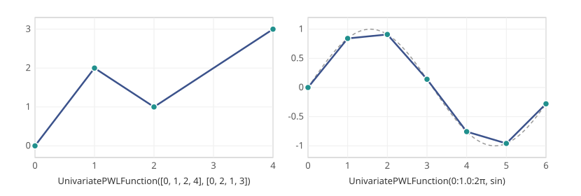
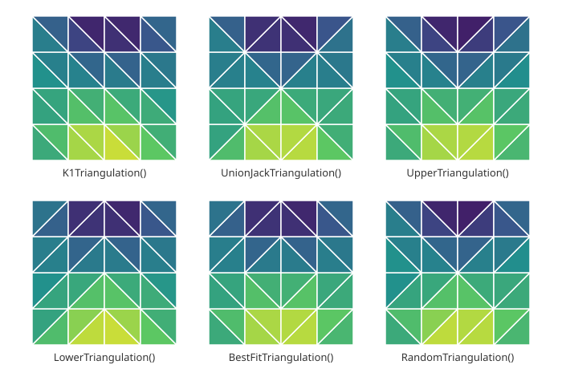

Piecewise linear functions
A PWLFunction from $\mathbb{R}^D$ to $\mathbb{R}^F$ consists of segments. Each segment is a SegmentPointRep, given by its vertices and the function values at them; the function is affine on the convex hull of the vertices. Most users construct functions from breakpoints with UnivariatePWLFunction and BivariatePWLFunction.
Univariate functions
A univariate function is given by strictly increasing breakpoints and either the function values at them or the function itself:
using PiecewiseLinearOptpwl = UnivariatePWLFunction([0, 1, 2, 4], [0, 2, 1, 3])pwl(1.5)1.5pwl = UnivariatePWLFunction(0:0.5:2π, sin)pwl(1.25), sin(1.25)(0.9194829857059754, 0.9489846193555862)The function is linear between neighboring breakpoints, and is only defined between the first and the last breakpoint. The figure shows the first function above, and a coarser approximation of sin with breakpoints 0:1.0:2π, which ends at 6, together with sin itself (dashed):

Bivariate functions
A bivariate function is given by breakpoints along each axis, which form a grid, and the function or a matrix z with z[i, j] = f(x[i], y[j]):
using PiecewiseLinearOptf(a, b) = (a + b)^2x, y = 0:2, 0:3pwl = BivariatePWLFunction(x, y, f)pwl_z = BivariatePWLFunction(x, y, [f(a, b) for a in x, b in y])pwl(0.5, 0.5), pwl_z(0.5, 0.5)(1.0, 1.0)Each cell of the grid is split into two triangles along one of its diagonals, as given by the triangulation keyword. The figure shows the triangulations of $f(x, y) = \sin(3x) \cos(3y)$ on a $5 \times 5$ grid, with $x$ to the right and $y$ upwards, and each triangle shaded by the mean function value at its corners, from dark (low) to light (high):

K1Triangulation and UnionJackTriangulation have a fixed pattern, independent of the function. UpperTriangulation, LowerTriangulation and BestFitTriangulation choose the diagonal of each cell from the function, and RandomTriangulation at random. The choice affects the function inside the cells:
[ t => BivariatePWLFunction(x, y, f; triangulation = t)(0.5, 0.5) for t in ( K1Triangulation(), UnionJackTriangulation(), UpperTriangulation(), LowerTriangulation(), BestFitTriangulation(), )]5-element Vector{Pair{A, Float64} where A}:
K1Triangulation() => 1.0
UnionJackTriangulation() => 2.0
UpperTriangulation() => 2.0
LowerTriangulation() => 1.0
BestFitTriangulation() => 1.0The true value at the center of the cell is f(0.5, 0.5) = 1. BestFitTriangulation chooses the diagonal that best matches the function at the center of each cell, while UpperTriangulation and LowerTriangulation give the largest and smallest interpolant. K1Triangulation, the default, and UnionJackTriangulation have a fixed structure that the K1 and UnionJack methods exploit.
Relaxations
A piecewise linear relaxation replaces a function by the band between a lower and an upper piecewise linear bound, e.g. when the function is only known to be within some error of its interpolant. UnivariatePWLRelaxation builds it from the breakpoints and the two bounds, given as vectors of values or as functions:
using PiecewiseLinearOptf(t) = t^2pwl = UnivariatePWLRelaxation(0:0.5:2, t -> f(t) - 0.1, t -> f(t) + 0.1)input_values(segments(pwl)[1]), output_values(segments(pwl)[1])([(0.0,), (0.0,), (0.5,), (0.5,)], [(-0.1,), (0.1,), (0.15,), (0.35,)])Each segment is the convex hull of the bounds at the ends of an interval, so the relaxation has several values at a point and cannot be evaluated. It is formulated by IndependentBranching and DisaggregatedLogarithmic, which model both bounds with the binary variables of a single function, half as many as two separate functions for the bounds would need (Lyu, Hicks and Huchette, 2025). The output then ranges between the bounds:
using JuMP, HiGHSmodel = Model(HiGHS.Optimizer)set_silent(model)@variable(model, x == 1.25)(y,), _ = piecewiselinear(model, [x], pwl; method = IndependentBranching())@objective(model, Min, y)optimize!(model)y_min = value(y)@objective(model, Max, y)optimize!(model)y_min, value(y)(1.525, 1.725)General functions
Functions of any dimension, possibly with several outputs or discontinuities, can be built from their segments. For example, a discontinuous univariate function:
using PiecewiseLinearOptsegments = [ SegmentPointRep{1,1}([(0.0,), (1.0,)], [(0.0,), (1.0,)]), SegmentPointRep{1,1}([(1.0,), (2.0,)], [(3.0,), (2.0,)]),]pwl = PWLFunction(segments, Intervals())pwl(0.5), pwl(1.5)(0.5, 2.5)and a function of three variables on a single tetrahedron, with two outputs:
vertices = [(0.0, 0.0, 0.0), (1.0, 0.0, 0.0), (0.0, 1.0, 0.0), (0.0, 0.0, 1.0)]values = [(0.0, 1.0), (1.0, 1.0), (2.0, 0.0), (3.0, 2.0)]pwl = PWLFunction([SegmentPointRep{3,2}(vertices, values)], Unstructured{3}())pwl(0.25, 0.25, 0.25)(1.5, 1.0)Not every method supports every function, see Formulation methods.